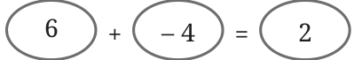
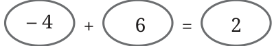
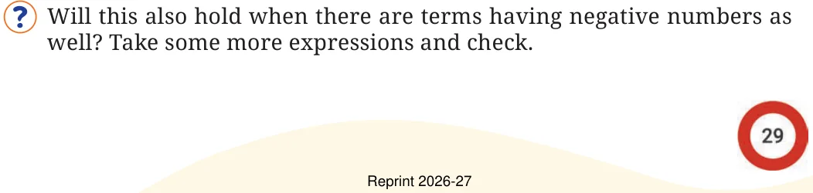
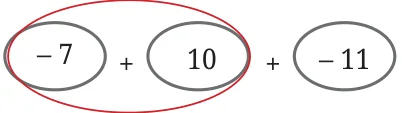
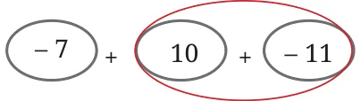
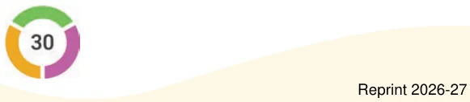
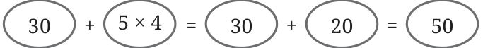
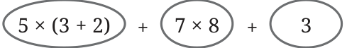

Let us consider a simple expression having only two terms.
Example 6: Madhu is flying a drone from a terrace. The drone goes 6 m up and then 4 m down. Write an expression to show how high the final position of the drone is from the terrace.
The drone is \(6 - 4 = 2\) m above the terrace. Writing it as sum of terms:

Will the sum change if we swap the terms?

It doesn’t in this case.
We already know that swapping the terms does not change the sum when both the terms are positive numbers.

Can you explain why this is happening using the Token Model of integers that we saw in the Class 6 textbook of mathematics? Thus, in an expression having two terms, swapping them does not change the value.
Now consider an expression having three terms: \((-7) + 10 + (-11)\). Let us add these terms in the following two different orders:

(adding the first two terms and then adding their sum to the third term.)

(adding the last two terms and then adding their sum to the first term.)
What do you see? The sums are the same in both cases. Again, we know that while adding positive numbers, grouping them in any of the above two ways gives the same sum.
Will this also hold when there are terms having negative numbers as well? Take some more expressions and check.
Can you explain why this is happening using the Token Model of integers that we saw in the Class 6 textbook of mathematics?
Thus, grouping the terms of an expression in either of the following ways gives the same value.
Let us consider the expression \((-7) + 10 + (-11)\) again. What happens when we change the order and add \(-7\) and \(-11\) first, and then add this sum to 10? Will we get the same sum as before?
We see that adding the terms of the expression \((-7) + 10 + (-11)\) in any order gives the same sum of \(-8\).

Does adding the terms of an expression in any order give the same value? Take some more expressions and check. Consider expressions with more than 3 terms also.
Can you explain why this is happening using the Token Model of integers that we saw in the Class 6 textbook of mathematics?
Thus, the addition of terms in any order gives the same value.
Therefore, in an expression having only additions, it does not matter in what order the terms are added: they all give the same value. Now let us consider expressions having multiplication and division also, without the order of operations specified by the brackets. The values of such expressions are found by first evaluating the terms. Once all the terms are evaluated, they are added. For example, the expression \(30 + 5 \times 4\) is evaluated as follows:

\(30 + 5 \times 4 =\)
The expression \(5 \times (3 + 2) + 7 \times 8 + 3\) is evaluated as follows:

\(5 \times (3 + 2) + 7 \times 8 + 3 =\)
Where \((3+2)\) is first evaluated and this sum is multiplied by \(5\) \((= 25)\). The expression \(7 \times 8\) is evaluated \((= 56)\). This simplifies to \(25 + 56 + 3 = 84\).
Manasa is adding a long list of numbers. It took her five minutes to add them all and she got the answer 11749. Then she realised that she had forgotten to include the fourth number 9055. Does she have to start all over again?
In mathematics we use the phrase commutative property of addition instead of saying "swapping terms does not change the sum". Similarly, "grouping does not change the sum" is called the associative property of addition.